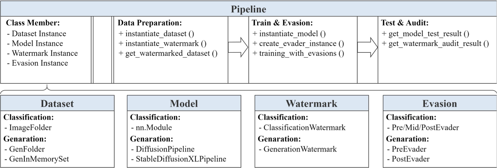

DWBench: Holistic Evaluation of Watermark for Dataset Copyright Auditing
ACM CCS 2026
1. Zhejiang University 2. Xi'an Jiaotong University 3. Vrije Universiteit Amsterdam
* Corresponding author

Abstract
The surging demand for large-scale datasets in deep learning has heightened the need for effective copyright protection, given the risks of unauthorized use to data owners. Although the dataset watermark technique holds promise for auditing and verifying usage, existing methods are hindered by inconsistent evaluations, which impede fair comparisons and assessments of real-world viability. To address this gap, we propose a two-layer taxonomy that categorizes methods by implementation (model-based vs. model-free injection; model-behavior vs. model-message verification), offering a structured framework for cross-task analysis. Then, we develop DWBench, a unified benchmark and open-source toolkit for systematically evaluating image dataset watermark techniques in classification and generation tasks. Using DWBench, we assess 25 representative methods under standardized conditions, perturbation-based robustness tests, multi-watermark coexistence, and multi-user interference. In addition to reporting the results of four commonly used metrics, we present the results of two new metrics: sample significance for fine-grained watermark distinguishability and verification success rate for dataset-level auditing, which enable accurate and reproducible benchmarking. Key findings reveal inherent trade-offs: no single method dominates all scenarios; classification and generation tasks require specialized approaches; and existing techniques exhibit instability at low watermark rates and in realistic multi-user settings, with elevated false positives or performance declines. We hope that DWBench can facilitate advances in watermark reliability and practicality, thus strengthening copyright safeguards in the face of widespread AI-driven data exploitation.
Resources
Citation
@inproceedings{RYDMSSGZ26,
author = {Xiao Ren and Xinyi Yu and Linkang Du and Min Chen and Yuanchao Shu and Zhou Su and Yunjun Gao and Zhikun Zhang},
title = {{DWBench: Holistic Evaluation of Watermark for Dataset Copyright Auditing}},
booktitle = {{CCS}},
publisher = {ACM},
year = {2026},
}